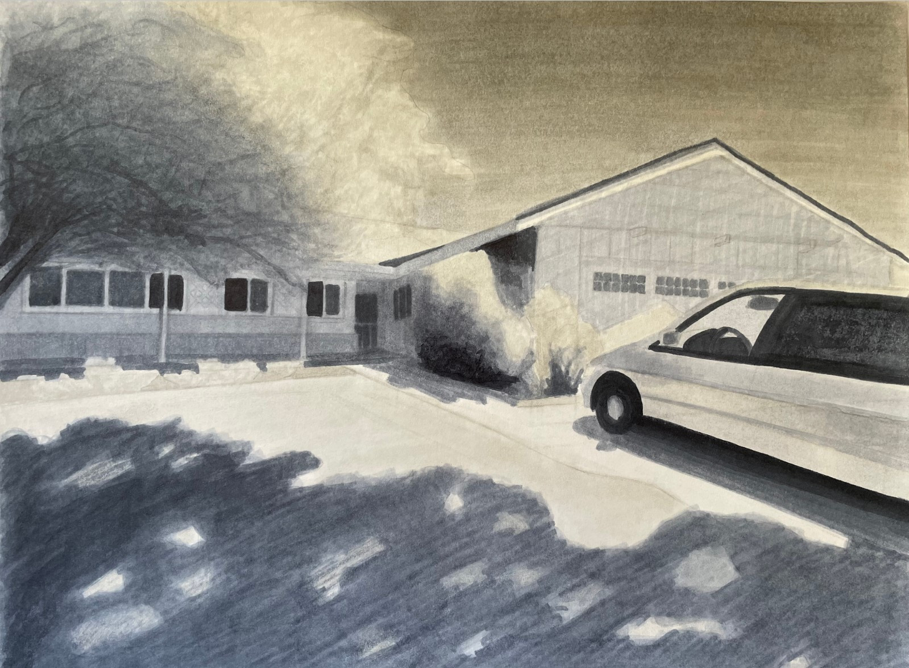

My House
- Medium
- Alcohol marker
I finished this piece in two sittings: one where I made the initial sketch, and the other where I added the values during the time of day. I experimented with the different types of greys in alcohol markers. I learned that a warm light from the sun casts a cool shadow, so I matched these values with the corresponding geometries.
